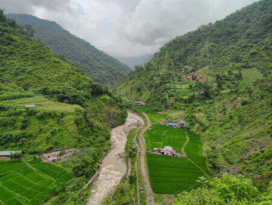
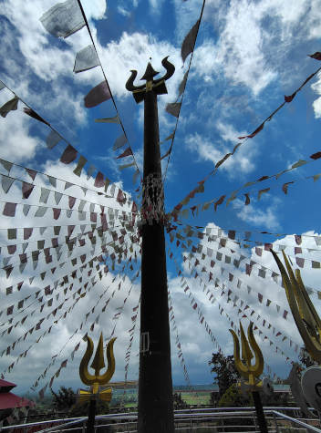
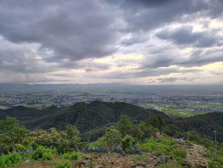

In this blog, I'll recap my two-week road trip through Nepal, focusing on the paperwork needed for entering Nepal with an Indian vehicle, the acceptability of Indian currency, road conditions, and local life. I spent much of my trip volunteering at local schools in Dang, as there isn't much to see in Dang and Lumbini otherwise.
A viewpoint near Sat Tale waterfall
Bhansar (Vehicle Permit) to Drive Indian Vehicles in Nepal
I entered Nepal through the Nepalgunj land border on my Vespa scooter. In hindsight, using a scooter for sightseeing on Nepal’s roads wasn’t the best choice. The security check was minimal—I only had to show my Indian ID, and a border officer briefly inspected my luggage. If you're planning a one-day visit to Nepal, you can get a free pass at the Bhansar office. For longer stays, you'll need a Bhansar (vehicle permit). Required documents for obtaining Bhansar include your vehicle registration and driving license. If the vehicle isn't registered in your name, bring an authorization letter and a copy of the owner's ID. As of August 2024, the daily Bhansar fee for a motorbike is NRs. 200, with a yearly limit of 30 days per vehicle. I was only issued a 7-day Bhansar despite requesting more. The Bhansar office accepts only Nepali Rupees, and while they do exchange Indian Rupees, the rates are less favorable than local shops. During my visit, local shops offered the conversion rate of 1 INR = 1.6 NPR, but the Bhansar office offered the rate of 1 INR = 1.5 NPR.
Dang
I spent my 1.5 weeks in Ghorahi and Tulsipur. I visited
Dharpani Temple, famous for the world's largest trishool, along with
Ghordaura viewpoint and
Maulakot viewpoint. The roads to the viewpoints are in poor condition, so hiking is the recommended way to reach them.
Trishool at Dharpani templeMaulakot viewpointMaulakot viewpoint
Lumbini
Lumbini, the birthplace of Lord Buddha, features the historic Maya devi Temple. There's an entrance ticket to visit Maya devi temple; cost of the ticket depends on the visitor's nationality. Within the campus there are other Buddhist monasteries (no entrance ticket) from various countries and a university dedicated to Buddhist studies. Some of the monasteries and most of the roads were still under construction when I visited, but the main river walk was complete and worth seeing. Be aware that Lumbini gets extremely hot in summer, so it's best to avoid visiting during peak summer season.
Local Life, Currency Exchange, Food and Road Conditions
Nepal is less crowded than India, making it easier to drive and walk. Always wear and securely fasten your helmet to avoid trouble with traffic police during random checks.
Products imported from India are often sold at double the marked price in Nepali Rupees. Cards are rarely accepted at local shops and petrol pumps, so carry sufficient cash. Even if a vendor accepts cards, most Indian bank cards don’t work in Nepal and Bhutan, though I had no issues using a U.S. credit card at a mini-mart. Almost all shops and petrol pumps in Nepal accept Indian currency without any surcharge.
Many Nepalis are migrating to developed countries for a better quality of life. Inflation is high, and despite paying high taxes, the infrastructure is poor. Roads between cities are manageable at low speeds, but they worsen significantly when you venture outside for sightseeing. Food quality in most places is substandard. If you’re a foreign visitor from outside Asia, avoid street food to prevent food poisoning, as Nepal’s healthcare system is lacking. For serious illnesses, you might need to travel to Kathmandu or cross into India for treatment.
Author's note
I completed this 2 week trip in August 2024. If you find any errors or would like to add any information that I missed, do not hesitate to email me. Latest contact information is available on my homepage.
 Dharpani Temple, famous for the world's largest trishool, along with
Dharpani Temple, famous for the world's largest trishool, along with